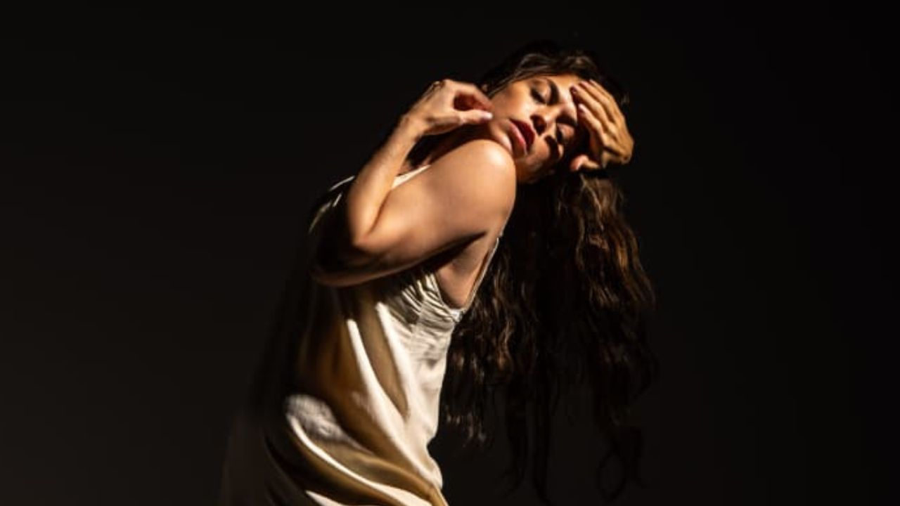

Jorge Farjalla dirige nova montagem de Valsa nº 6 no Teatro Sérgio Cardoso

Com Carol Costa em cena, clássico de Nelson Rodrigues ganha versão imersiva e intimista na Sala Paschoal Carlos Magno, a partir de 3 de julho
O diretor e encenador Jorge Farjalla estreia uma nova montagem de Valsa nº 6, clássico de Nelson Rodrigues, no dia 3 de julho de 2026, na Sala Paschoal Carlos Magno, no Teatro Sérgio Cardoso, em São Paulo. Intitulada valsanúmero6, a encenação propõe uma leitura contemporânea do único monólogo escrito pelo dramaturgo, com temporada até 27 de julho.
Reconhecido por trabalhos de forte impacto visual e emocional, Farjalla parte da estrutura fragmentada da obra para aprofundar temas como memória, violência, silenciamento e condição feminina. A montagem traz no elenco Carol Costa, atriz que já trabalhou com o diretor em espetáculos como Clara Nunes, A Tal Guerreira e Ópera do Malandro.
A nova versão aposta em uma experiência imersiva e intimista. A plateia será acomodada em formato de arena, com apenas 40 cadeiras posicionadas diretamente sobre o palco da Sala Paschoal Carlos Magno. A proximidade entre público e atriz busca ampliar a tensão da narrativa e colocar o espectador dentro do ambiente emocional da personagem.
Na releitura de Farjalla, Valsa nº 6 ganha contornos ligados a questões atuais, especialmente a violência contra a mulher, os abusos silenciados e as marcas deixadas por relações opressoras. A proposta transforma o palco em espaço de escuta, denúncia e reflexão, recolocando a figura feminina no centro da narrativa rodrigueana.
“É impossível atravessar esse texto sem pensar em todas as Sônias que continuam sendo silenciadas, apagadas ou desacreditadas. Essas histórias, esses abusos, acontecem mais perto de nós e com mais frequência do que gostaríamos de admitir. Por isso, é urgente escutar nossas mulheres, jovens e crianças”, afirma Carol Costa.
A atriz conduz o espetáculo em uma travessia por memória, delírio e realidade. Em cena, as lembranças surgem de maneira quebrada, instável e emocionalmente intensa, revelando camadas de uma personagem que tenta reconstruir a própria história enquanto enfrenta suas ausências, seus traumas e suas zonas de esquecimento.
A montagem conta com direção musical de Gui Leal, parceiro de Farjalla em Ópera do Malandro. A trilha, composta pelo diretor, parte da linguagem eletroacústica. O desenho de som é assinado por Tocko Michelazzo, criando uma experiência sonora que envolve diretamente o público. A iluminação é de Gabriele Souza, que também assinou a luz de Ópera do Malandro. A produção é de Thiago Catelani.
Com essa nova encenação, Farjalla volta a dialogar com o universo de Nelson Rodrigues, autor que já atravessou outros momentos de sua trajetória artística. O diretor esteve à frente de montagens como Dorotéia, Senhora dos Afogados e Álbum de Família, além de espetáculos musicais e produções de grande circulação, como O Mistério de Irma Vap, Brilho Eterno, Clara Nunes, A Tal Guerreira e Ópera do Malandro.
Carol Costa chega ao monólogo após uma trajetória marcada pelo teatro musical brasileiro. A atriz, cantora e bailarina integrou o elenco de Ópera do Malandro em 2026, interpretando Teresinha, e recebeu reconhecimento por trabalhos como Clara Nunes, A Tal Guerreira, Chaves – Um Tributo Musical, Chicago, Anastasia, A Chorus Line e Hebe – O Musical.
Em valsanúmero6, a parceria entre Farjalla e Carol Costa se desloca para um território mais concentrado, em que a palavra de Nelson Rodrigues, a presença da atriz e a proximidade com o público constroem uma experiência teatral de alta tensão emocional.
Serviço
valsanúmero6, na visão de Jorge Farjalla
Texto: Nelson Rodrigues
Direção: Jorge Farjalla
Com: Carol Costa
Estreia: 3 de julho de 2026
Temporada: de 3 a 27 de julho de 2026
Local: Sala Paschoal Carlos Magno – Teatro Sérgio Cardoso
Endereço: Rua Rui Barbosa, 153 – Bela Vista – São Paulo/SP
Dias e horários: sextas-feiras, sábados, domingos e segundas-feiras, às 19h
Ingressos:Inteira: R$ 100,00Meia-entrada: R$ 50,00
Venda de ingressos: Sympla
Informações: (11) 3288-0136
Classificação indicativa: 14 anos
Duração: 60 minutos
Gênero: drama